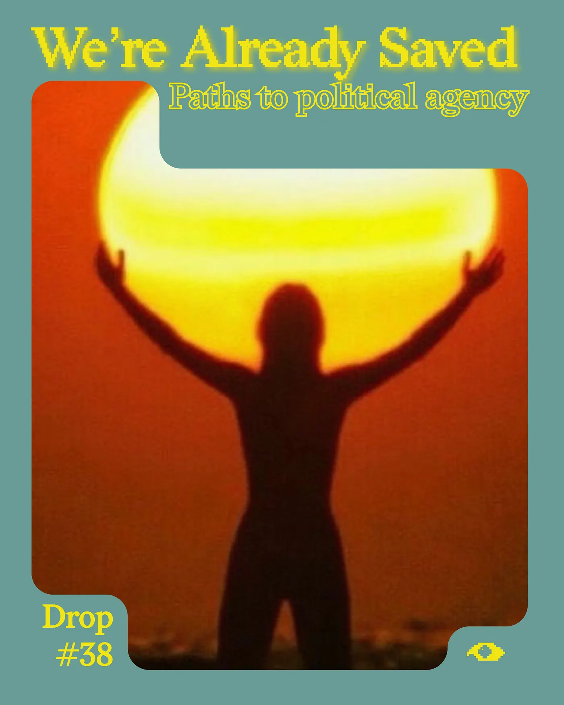
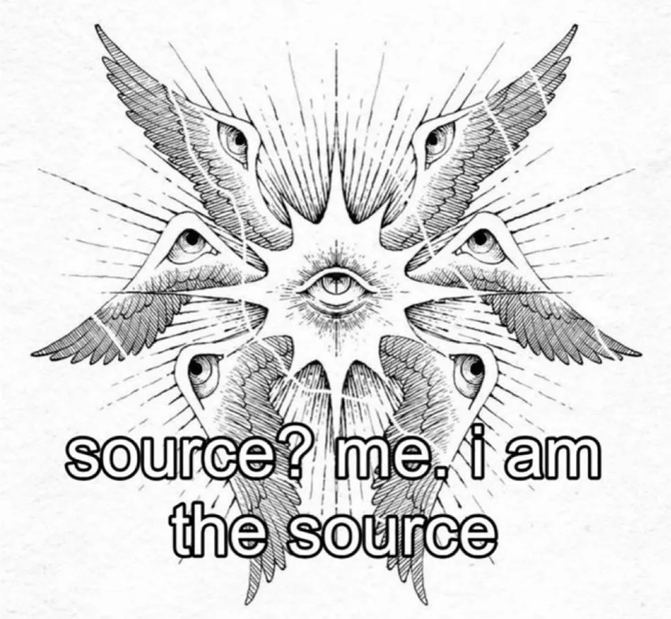
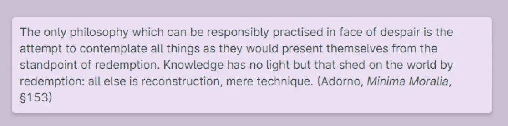
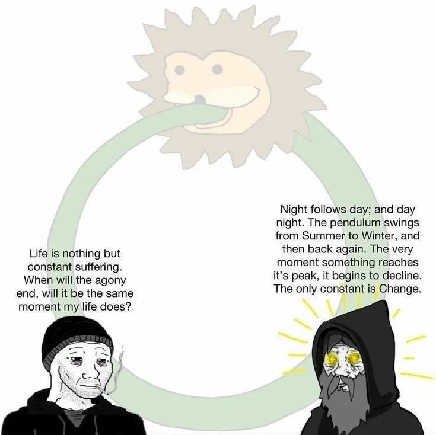
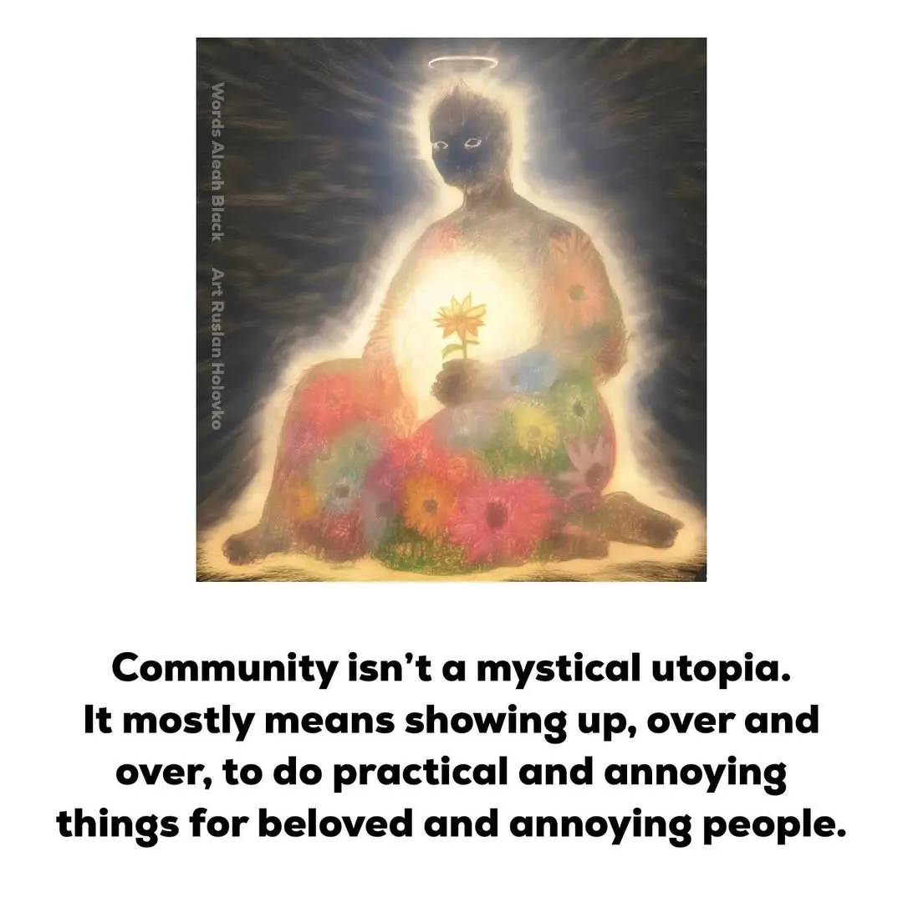
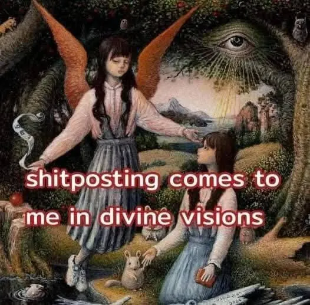
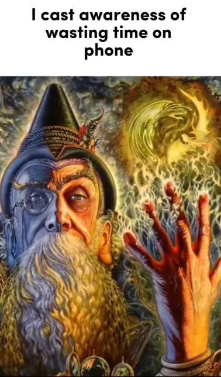

Drop #38 · September 9, 2025 · 9 min read
Paths to political agency
Hey everyone (▰˘◡˘▰)
DROPS is back after the summer break. We continue with the third installment of Simone Robutti’s exploration of political holism, agency, and the spirituality of struggles. An exceptional pragmatic-intellectual adventure that we are honored to host—one that reflects REINCANTAMENTO's own journey across realms of speculative hope and militant wonder. Quoting a meme from this piece:
“Community isn’t a mystical utopia. It mostly means showing up, over and over, to do practical and annoying things for beloved and annoying people.”
Simone Robutti is a knot of flows and occasionally he’s a person too. He engages in Tech Unionism, Algorithmic Accountability, Common Cybernetics, and Democratic Organizational Design. He works as a consultant/trainer on Organization and Process Design. You can find his blog at this link.

What is political agency? Agency is the faith that your actions will have an impact on the world. Ideally, the impact you want to have. This is something we acquire pretty early in our development. You throw a pillow towards the pile of toys, and the pile collapses. We lose it over time, bombarded by distractions, expectations, demands, or constraints.
Everything is provided to us under the condition that we stay on the tracks. In the past, these limits were explicit: go to school, work, marry, reproduce, die. Now the commands are softer but equally disempowering: be unique, innovate, think for yourself, grow, thrive, consume social media, produce data, curate experiences.
Now the commands are softer but equally disempowering: be unique, innovate, think for yourself, grow, thrive, consume social media, produce data, curate experiences.
Like a fever dream, we act, but with no consequence. Our actions change nothing. The world crumbles around us while our paralysis demon comes dressed in professional attire.
Political agency operates on the same principle, except now the world you're trying to reshape is full of people with opposite motives.
The reconquest of agency, individual and collective, is the new political imperative. The foundation without which no battle can be fought. You do a thing, the world changes. Ask any baby. They're experts at agency. They know. Or ask a tech oligarch. They know they can shape the world. They also happen to have the same impulses and sense of responsibility as a baby. Maybe the two things are connected, who knows?
Here, I want to offer some different paths to reconquer your agency, without the need to regress to a 5-year-old. I mean, do it in bed if you like. No kink shaming.
Path(s) towards agency
The first, but hardest path, is what I call magical agency. No, you won't be throwing fireballs. Not at the beginning, at least. Magical agency is about planting a little seed at the deep core of your being. A seed of unshakeable conviction: “You already won. You're already saved. You already played the best move.”
If exposed to the scorching sun of reality as it is, the seed doesn't sprout. Why? Because the evidence is that you haven't won yet. The evidence of external truth kills the faith of the inner truth. To sprout the seed, you need action.
Action is the water that feeds the seed, so that your inner truth can align with your environment. The seed creates a fundamental tension between the world as you want it and the world as it is. Now you're fucked. You have to protect the seed. You have to live with the tension, go out in the world, and reshape it to ease the tension. You will die way before the seed will have turned into a towering tree. If you're lucky, on your deathbed, you will rest in the shade of a couple of microscopic leaves; a privilege reserved for a few nowadays.

Within magical agency, victory comes before action. You approach the world knowing you're already saved. Armed with critical tools, strategic thinking, and a circle of equally critical peers, you can develop a plan of action with peace of mind. At night, you rest easy knowing that given the information available to you, given the conditions you faced, given the position you held, you picked what looked like the best decision. Ego, fears, insecurity, and self-doubt can't touch you: because you're already saved.
Within magical agency, victory is a premise, not an outcome. The game becomes maximizing your chances to create the conditions for your world to flourish. Stay true to your proposition, stay honest with yourself and your peers, and what happens next is pure execution.

The second path to agency is experiential agency. This is agency absorbed from your environment. The people around you have agency, believe in their own agency, and they put you on a path to rediscover your own through osmosis. Agency cannot be explained: it must be experienced, and so you might not notice it happening. You will wake up one day, look back and think: "Motherfuckers, they knew all along. They did it on purpose."
In political organizations, this often takes the form of small tasks given to newcomers still finding their feet. These are activities designed to set baby agents up for success. They experience agency directly, first in a safe, restricted setting, then progressively in more challenging situations, until they can stand on their own two feet.

Experiential agency is a feedback loop: victory follows action and action follows victory. Agency accumulates along the way, getting stronger by the day. You observe the world, take action, observe your impact. If you win, you celebrate and come back the next day, aiming higher. If you lose, you step back, reassess your assumptions, your strategy, your tools - even yourself - and try again until you win.
Experiential agency is delicate because if you lose too much too early, the game is over: you're burned out, traumatized, rejected, depressed, and you give up. Some political spaces are completely oblivious to this dynamic, peddling "losing better" as an empowering message.
These spaces attract people who find validation in defeat: revelers of victimhood, serial losers who traumatize anyone still capable of normal reactions to failure. It's pointless to promise big wins from the beginning, but it's manipulative, delusional, and repulsive to romanticize every defeat, especially defeats earned without trying your best. Persistence is a virtue only if you have a good strategy. Otherwise, you're like the Arachnids bugs in the sci-fi classic Starship Troopers: throwing bodies at machine guns with no strategy beyond mindless repetition.
Experiential agency must be an act of collective care. It doesn't happen spontaneously— not in our days, at least. When was the last time you developed agency for somebody you love? When was the last time somebody did it for you?

I'm personally more of a magical agency kind of guy, at least in politics and my social life. Most of you might be wondering where the seed comes from and how you plant it. What is the seed, in the end? Well, I can only answer for myself, and the answer is: drugs. I was once at the end of a very long acid trip, wondering whether I was actually doing fine or just convincing myself I was doing fine. I asked the Mother Goddess Transcendental Luminous Being at the end of Time and Space, and she said: "All good, bro, chill 👍". Who am I to question such a majestic being?
I have no single way to develop magical agency. Some religions might help, but if you are an edgy atheist, this might be harder. In a way, REINCANTAMENTO is trying to crack exactly this problem: how do we rebuild wonder and enchantment without traditional belief systems? Whatever path you take, after reading this article, when you find your little seed, you will have a way to recognize it and give it a name.

I've also gone through experiential agency in other fields than politics, though. This same pattern of reclaiming agency plays out in unexpected places. One episode I can clearly identify this way is my first attempt at preserving garlic with honey.
While both ingredients have strong anti-bacterial properties, they also carry spores of Clostridium botulinum, which, if developed in the right environment, can produce botulinum toxins. In very small and diluted amounts, they are great to give you plump lips. In higher dosages, they kill you quite quickly.
Now, garlic preserved in honey is very tasty: the garlic softens over time, loses the stronger flavor compounds, and starts slowly turning into a sort of candy. I recommend it crushed, mixed with butter and salt flakes, as a spreadable appetizer. It's relatively easy to ferment: if there's no contamination, no pools of water on top of the honey or other weird stuff, you can be sure it's safe. But if it's not safe, you die. Ah, I forgot: botulism toxins are odorless, flavorless, and invisible. You might have visual clues from other forms of contamination that correlate with the toxins, but the botulism bacteria, per se, cannot be spotted.
Back to the agency part: most of us, due to the takeover of industrial food production, have lost agency over food preservation, together with the most obvious problems with the loss of agency over production and processing (i.e. you can't cook an egg). Everything is provided to us under the condition that we don't leave it out of the fridge for too long. If we do that, we are promised we won't get food poisoning. I mean, sometimes you die anyway because somebody cut costs in some factory. Not much agency there.
The parallel to political agency is precise: industrial systems promise safety in exchange for dependence, but they can't eliminate risk—they just hide it from you.
While it's more common to start from ferments that, in the worst case, give you bad food poisoning for a few days, my partner was already moving at a different pace and pulled me into this experiment. At some point, I had to try it and trust that I did everything right. Yes, there's a minuscule chance of dying, I'm aware of the risk, and yet I trust that tomorrow I'm going to be alive.
Well, I'm still alive, less afraid of unnoticed food contamination, and with a stronger trust in good, rigorous sanitation practices. My partner also went on to start a professional career as a fermenter while I'm writing a blog post about it. Draw the conclusions you prefer. I'm a writer, not a cop, and it's time for you to stop reading and grow some agency.
